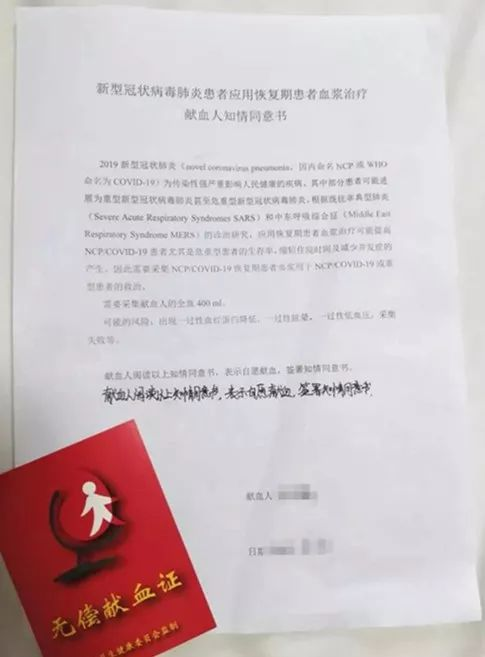
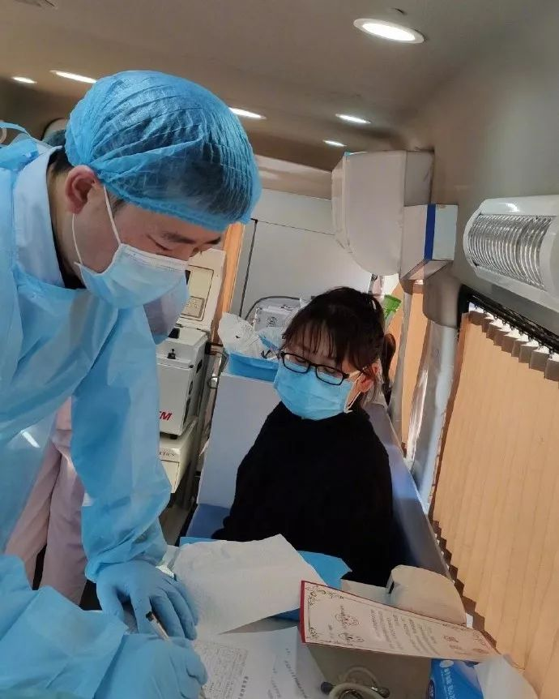

血浆抗体治疗投入新冠肺炎临床 专家：有效率在60%-90% - 经济观察网 － 专业财经新闻网站
原文链接 备份链接 经济观察网 记者 瞿依贤 2月13日晚间，中国医药集团下属公司中国生物宣布：在武汉地区实施了新冠肺炎康复者血浆采集，已成功制备出用于临床治疗的特免血浆，目前超过10名危重病人接受了新冠特免血浆治疗，患者接受治疗12 …
记者/郭慧敏 屈畅 戴幼卿 实习记者/李一鸣 龙天音
编辑/计巍 宋建华

江夏区中医医院康复出院的工作人员在捐献血浆
2月13日，武汉市江夏区中医医院的刘宇静从副院长那里得知，自己和本院另外18名康复医护人员的献血“全部有抗体，分离出来的血浆大部分用于救助江夏区的重症患者，部分支援金银潭医院”。虽然还不清楚血浆治疗的最终效果，刘宇静还是为这一份“希望”感到开心。
同一天，国药中国生物（以下称中国生物）发布消息称，已完成对部分康复者血浆的采集工作，成功制备出用于临床治疗的特免血浆，并对两名危重患者进行了特免血浆治疗，目前连同后续治疗的危重病人已超过10人。
2月14日，武汉市金银潭医院院长张定宇表示，金银潭医院已有4名患者接受了康复病人的血浆治疗，短期内看到向好迹象，生命体征逐渐稳定，精神状况得到改善，“目前主要还是用于重症患者，极其危重的患者临床应用效果不敢肯定。”
截至目前，特免血浆治疗方法仍面临许多挑战。中国免疫学会副理事长黄波在接受深一度采访时表示，如何筛选中和性抗体含量高的痊愈患者血浆，仍有待研究。资深疫苗专家陶黎纳也在采访中指出，目前新冠特免血浆来源于康复者，但产品化的特免血浆如何保证产量是一大问题。
江夏区中医医院护士长徐萍在得知自己捐献的血浆可以用于临床的消息后，有了一个新的念头。本月底，她将前往江夏区方舱医院参与新冠病人的安抚和陪伴工作。在那里，徐萍希望能够让更多患者了解特免血浆治疗手段，参与血浆捐献，因为“他们都是很有希望治愈的”。

江夏区中医医院康复出院的医护人员在捐献血浆

首批血浆捐赠者为康复后的医务人员
徐萍是武汉市江夏区中医医院的一名护士长，也是特免血浆的第一批捐献者。
1月20日，徐萍在上班时有些头晕，随后在CT检查中发现肺部感染，并被安排在本院进行住院治疗。在江夏区中医医院设为新冠肺炎定点医院前，有四十余名医护人员感染新冠肺炎，医院工作人员表示目前“感染途径很难完全确定”，在医院从事行政工作的刘宇静也是其中的感染者之一。
“具体怎么感染的到现在我也不清楚。”1月16日，刘宇静感觉体温不正常去拍了CT，发现肺部有阴影，一个星期之后，她进行了核酸检测，确诊新冠肺炎。
徐萍回忆，自己在住院治疗期间服用并注射过抗病毒及增强免疫力的药物，包括头孢曲松、白蛋白、莫西沙星等，同时服用清热解毒的中药。刘宇静则“第一天就熬了中药，之后没断过”，另外服用了奥司他韦等西药，并注射消炎药，症状减轻之后采取了雾化等治疗方式。
在没有特效药的情况下，刘宇静认为最终能够康复得益于自身调理，“得多吃饭，保持好心情，让身体和心态之间形成良性循环。”武汉市金银潭医院院长张定宇在接受媒体采访时也表示新冠肺炎属于自限性疾病，通过人体的抵抗力和免疫调节，能够杀灭病毒，从而得到修复。1月28日，徐萍康复出院，6天之后，刘宇静也治愈出院。
住院治疗期间，为“鼓舞士气”，江夏区中医医院院长熊侃给所有患病住院的医护人员建了一个微信群。2月4日，群里传来一条特别的消息：现在有很多重症患者，他们唯一的希望是输入康复者携带抗体的血浆，因此倡议康复者捐献血浆。
“之前从来没有了解过血浆治疗。”徐萍说。很快，同事在群里发了一张新闻截图，报道中称非典时期也采用过血浆治疗的方法。相比动员普通患者回来捐献血浆，徐萍觉得自己更适合做首批捐献者。
据刘宇静了解，中医医院是首个进行血浆采集的医院，血浆捐献计划是院方跟江夏区第一人民医院沟通后确定的。“院长说治疗效果还不确定，但我觉得既然有希望救人就捐吧。”刘宇静说，“如果真的有用，让我们再捐一次也可以。”
2月5日，包括徐萍、刘宇静在内的第一批医护人员从家中来到医院捐献血浆。江夏区第一人民医院业务院长刘本德对捐献血浆的医护人员表示，采血主要是为了提取抗体，用于实验，以验证是否有疗效。
每名捐献者的血浆采集需经过三十分钟，血量标准为女性300毫升，男性400毫升，“但两位男同事都选择捐献了550毫升，每位同事都希望能够多捐一点。”徐萍说。
2月13日，刘宇静在微信群中询问捐献血浆的结果，副院长回复：“全部有抗体，分离出来的血浆大部分用于救助江夏区的重症患者，部分支援金银潭医院。”同日，徐萍在新闻报道看到“中医医院19个人的血浆将用于危重病人的救治”，她觉得很欣慰，“捐献的血浆只要能帮助到患者，我们就很开心。”

血浆捐献者知情同意书
想能让更多人了解特免血浆治疗
2月14日，徐萍报名支援江夏区方舱医院，本月底，她将前往那里参与新冠病人的安抚工作。由于新冠肺炎存在从轻症到重症的变化过程，有些患者会产生恐惧情绪，需要有治愈经历的医护人员进行陪伴与分享，告诉他们这是一个必经的过程。
在那里，徐萍希望能够让更多患者了解特免血浆治疗手段，参与血浆捐献，因为“他们都是很有希望治愈的”。
在“特免血浆用于临床治疗”消息发布的当天，中国生物联合武汉血液中心发布了康复者血浆捐献倡议书。
除武汉以外，广东、山西、江苏等地的捐献点也先后迎来捐献血浆的康复者。
据澎湃新闻报道，上海14日出院的28名新冠肺炎康复者中，有6人有捐献意愿，且已经有一例患者正在准备接受血浆治疗，国家卫生健康委专家组成员卢洪洲称，已经制定好详细方案，人员配备和仪器配备也已经到位。同日，江苏第一例血浆抗体治疗在徐州医科大学附属医院成功实施。
中国生物组建的专项科研攻关团队总指挥杨晓明2月15日对媒体表示，康复者血浆疗法不针对所有新冠患者，“主要针对重型和危重型”。目前危重病人人数多且死亡率高，而康复病人超过6000名，远远大于危重病人。
在深一度的采访中，新冠肺炎康复者血浆采集点的工作人员表示，从13日晚开始，采集点电话不断响起，“具体接了多少数不清了，至少有四五十个。”
中国生物武汉生物制品研究所总经理段凯在采访中称，截至15日，已经接到280多个记名电话，有明确捐献意愿的有20多个，3位捐献者已完成采集。
武汉血液中心的工作人员表示，血浆采集对捐献者有一定要求，要满足年龄在18至60周岁，确诊感染过新型冠状病毒，出院后目前身体状况较好，没有其他不适。一次捐献的血浆量在200毫升到400毫升之间，“血液中55%是血浆，45%是血细胞，血浆捐献后，血细胞还会返还到捐献者体内，补充一些温水后，很快血液就能恢复，不会对捐献者有副作用。”一次采集时间约为20至30分钟，间隔14天后可再次捐献。
金银潭医院院长张定宇在此前采访中表示，希望捐献血浆的行动能够持续下去。与此同时，他也强调血浆治疗方法存在一定风险，由于输入的是别人的血浆，里面可能含有过敏或其他一些不确定因素，“但是在一个救命的环境下，对于重症病人救治来说，这是一个必要选择，风险远远小于它的获益。”

山西一名康复者捐献血浆（图/太原市红十字血液中心）
特免血浆治疗仍有难题待解
中国免疫学会副理事长黄波在接受深一度采访时称，患有新冠病毒肺炎的患者之所以康复，不是靠打针吃药实现的，而是机体的免疫系统被激活，病毒才得以清除。“我们免疫系统中最强大的一种武器，就是激活了B细胞，从而产生抗体。”
黄波介绍，特免血浆的医学原理即康复患者体内会有抗体生成，其是由机体B细胞激活后所产生并释放到细胞外，进而进入血液中，故抗体存在于血液中。把含有抗体的血浆给患者输入，则可以利用康复者血浆里的抗体去对抗患者身体里的病毒。
关于抗体发挥作用的具体过程，黄波称，病毒只有在进入细胞之后才具有生命力，而抗体跟病毒结合之后能够阻止其进入细胞，在此情况之下，病毒经过一段时间就能自行降解衰败。“不同的康复患者血浆中抗体含量不一致，有的高有的低，因此需要去筛选，利用抗体含量高的血浆去治疗效果会好。”
在黄波看来，血浆治疗仍面临一定的挑战。抗体包括中和性抗体（当病原微生物侵入机体时会产生相应的抗体）和非中和性抗体，在利用康复者血浆中的抗体来对抗病魔时，两者都能发挥作用，但在对抗机制上有一定区别。“非中和性抗体种类多于中和性抗体，在治疗过程中，筛选中和性抗体含量高的痊愈患者血浆，仍然是相关研究中的一大挑战。”
资深疫苗专家陶黎纳在接受深一度采访时表示，新冠病毒特免血浆的另一待解难题就是产量。目前，新冠特免来源于康复者，但产品化的特免不可能来源于康复者，因为这种来源并不稳定，且不能重复采集。加之每个康复者体内的抗体浓度不同，提炼后得到的新冠特免抗体浓度也可能无法准确定量。
“用多了会浪费宝贵的血浆，用少了可能会更糟糕。”陶黎纳称，在“非典”康复者血浆抑制SARS病毒的研究中，曾发现存在“ADE效应”，即抗体反而增强感染的效应。特异性抗体能够与病毒结合使其失去粘附能力，阻止病毒感染人体。但在某些情况下，这种抗体与病毒结合后反而能帮助病毒进入细胞，提高病毒感染力。
“ADE通常发生在抗体浓度较低的情况下。也就是说，如果给患者治病的特免剂量不够，存在反而加重病情的可能。”陶黎纳说。
（应受访者要求，文中徐萍、刘宇静为化名）
【反侵权公告】本文由北京青年报与腾讯新闻联合出品，未经授权，不得转载。


死亡病例过千，尚无一例病理解剖 | 深度对话

送别李文亮医生：愿天堂没有病毒| 深度报道

鄂A牌车30小时归乡记 | 深度报道


原文链接 备份链接 经济观察网 记者 瞿依贤 2月13日晚间，中国医药集团下属公司中国生物宣布：在武汉地区实施了新冠肺炎康复者血浆采集，已成功制备出用于临床治疗的特免血浆，目前超过10名危重病人接受了新冠特免血浆治疗，患者接受治疗12 …
原文链接 备份链接 2 月 13 日晚间，国药中国生物宣布了一项重要进展，在新冠肺炎康复者血浆中已检测出高效价病毒中和抗体，实验证明，能够有效杀死新冠病毒，“我们用康复者特异血浆临床治疗 11 例危重病人，治疗效果显著。” 中国生物官方宣 …
原文链接 备份链接 大范围推广仍需进一步临床试验的评估2月13日晚，在湖北省新冠疫情新闻发布会上，武汉市金银潭医院院长张定宇表示，康复后的患者体内有大量的中和抗体来抵抗新冠病毒。他呼吁康复期患者捐献血浆，共同拯救还在与病魔作斗争的病 …
原文链接 备份链接 记者：谢欣 编辑：许悦 “ 武汉金银潭医院院长张定宇对外表示，金银潭医院正在开展康复病人的恢复期血浆输注，目前也显示出一些初步效果，因为康复期患者体内有大量综合抗体来对抗病毒。 ” 2月13日晚，武汉金银潭医院院长张定 …
原文链接 备份链接 湖北省新冠肺炎疫情防控指挥部13日21时召开新闻发布会，邀请中央指导组医疗救治组专家、北京朝阳医院副院长童朝晖、广州支援武汉协和医院医疗队队长、广州医科大学附属第一医院副院长张挪富、武汉金银潭医院院长张定宇等介绍武汉 …